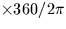
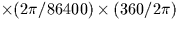
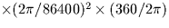

| HA | D | hour angle |
|---|---|---|
| DEC | D | declination |
| PHI | D | observatory latitude |
| AZ | D | azimuth |
|---|---|---|
| AZD | D | azimuth velocity |
| AZDD | D | azimuth acceleration |
| EL | D | elevation |
| ELD | D | elevation velocity |
| ELDD | D | elevation acceleration |
| PA | D | parallactic angle |
| PAD | D | parallactic angle velocity |
| PADD | D | parallactic angle acceleration |
| angles |  | degrees | |
| velocities |  | degree/sec | |
| accelerations |  | degree/sec/sec |
Note that the seconds here are sidereal rather than SI. One sidereal second is about 0.99727 SI seconds.
The velocity and acceleration factors assume the sidereal tracking case. Their respective numerical values are (exactly) 1/240 and (approximately) 1/3300236.9.
SLALIB --- Positional Astronomy Library